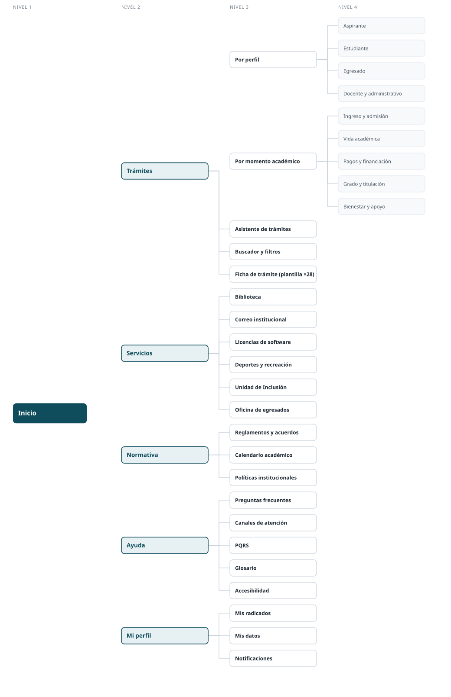

RU
Arquitectura de la Información · Proyecto final
Ruta U
Rediseño de la arquitectura de la información del portal de trámites de la Universidad San Rafael.
Alejandro Aguilar · Alejandro Cabrera · Jesús Ramírez
Docente: Paul Sanmartin · Noviembre de 2026
El problema
No era un problema de diseño visual. Era de vocabulario y de estructura.
4
nombres distintos para el mismo certificado, según la dependencia
38 %
de solicitudes presenciales se devuelven por documentos incompletos
1/3
de los contactos a la mesa de ayuda son para preguntar «¿en qué va?»
El estudiante debe adivinar tres cosas antes de empezar: cómo se llama el trámite, quién lo atiende y qué debe llevar. Cuando falla, reinicia el proceso.
Usuarios
Cuatro perfiles, dos que concentran el 72 % de las solicitudes.
AspiranteQuiere entrar
Inscripción, resultados, matrícula inicial. Riesgo: abandona el proceso.
Estudiante · 54 %Valentina, 20
Beca por renovar, tres días, todo desde el celular. Llamó tres veces y nadie le dio la misma respuesta.
Egresado · 18 %Andrés, 27
Visa, trabaja todo el día, vive en otra ciudad. Si el portal no funciona de noche, no existe.
DocenteMarta, 52
40 homologaciones por semestre. Necesita el artículo exacto, no un resumen.
Añadimos una persona de accesibilidad: Camila, 22, usa lector de pantalla. Su escenario es una tarea de la prueba.
Método
Cinco técnicas, en este orden. El orden importa.
01
Benchmark
5 portales, 12 criterios. Ninguno cumplía más de 7.
02
Entrevistas
6 personas + encuesta a 42. Vocabulario y fricción.
03
Card sorting
8 participantes, 28 tarjetas. Agrupación real.
04
Tree testing
6 participantes, 5 tareas. Sin diseño visual.
05
Prueba de usabilidad · 2 rondas
5 + 5 participantes, 6 tareas, SUS. La segunda ronda mide las correcciones de la primera.
«Habríamos hecho el tree testing antes del card sorting: dos etiquetas no significaban lo que creíamos.»
Hallazgos
Seis hallazgos, seis decisiones.
- H1La gente busca por resultado («necesito mis notas»), no por dependencia → dos ejes de navegación.
- H24 de 6 no conocían el nombre oficial del trámite → sinónimos indexados + asistente.
- H3El requisito invisible causa el 38 % de las devoluciones → requisitos dentro de la ficha.
- H4«¿En qué va?» es la consulta más frecuente → radicados con línea de tiempo.
- H581 % usa el celular como primer dispositivo → diseño desde 320 px.
- H6Se desconfía del PDF descargado → código de verificación y firma electrónica.
Card sorting · 8 participantes
La gente no agrupa como la universidad.
- 1«Papeles que me piden»
- 2«Cosas de la matrícula»
- 3«Plata»
- 4«Salir de la universidad»
- 5«Ayuda y bienestar»
«Homologación» no es matrícula
Se agrupó con «papeles» (6/8). La movimos a Vida académica con referencia cruzada desde Ingreso.
«Paz y salvo» se busca con el grado
Se queda en Pagos, pero con enlace contextual desde Solicitud de grado.
La etiqueta importa
«Homologación de materias» ganó a «Convalidación»: 6 de 8 usaron la primera palabra.
Tree testing · 6 participantes, 5 tareas
Probar la jerarquía sin diseño visual cambia todo.
T1 Certificado100 %
T2 Homologación83 %
T3 Reglamento67 %
T4 Diploma67 %
T5 Intérprete LSC50 %
Promedio73 %
Éxito directo al primer clic. Las dos tareas débiles revelaron que «Normativa» e «Inclusión» no significaban lo que el equipo creía. Se corrigieron antes de dibujar los wireframes.
La arquitectura
Cinco secciones, cuatro niveles, 37 nodos.

La decisión central
Dos ejes para el mismo conjunto de trámites.
¿Quién eres?
- Aspirante
- Estudiante
- Egresado
- Docente y administrativo
+
¿En qué momento estás?
- Ingreso y admisión
- Vida académica
- Pagos y financiación
- Grado y titulación
- Bienestar y apoyo
No compiten: son vistas del mismo contenido. Cubren a quien conoce el nombre del trámite y a quien no. Y si ninguna funciona, hay un tercer camino: el buscador con sinónimos.
La unidad de contenido
Una ficha de 12 campos para los 28 trámites.
Si falta un campo obligatorio, la ficha no se publica. Es la regla que evita el problema original: información incompleta que obliga a llamar.
idnombresinónimosciclo
perfilesdependenciaresumenrequisitos
costotiempomodalidadpasos + norma
Estandariza
El usuario aprende una sola estructura y la reutiliza en los 28 trámites.
Escala
Publicar un trámite nuevo es llenar 12 campos, no diseñar una página.
Gobierna
Cada ficha tiene responsable y fecha de revisión. La arquitectura no se degrada sola.
El prototipo
13 pantallas, web y móvil, mismo código.
Evaluación · dos rondas
Lo que cambió entre la primera y la segunda prueba.
72 → 92 %
tasa de éxito +20 pts
94 → 51 s
tiempo promedio −46 %
3,2 → 1,1
errores por tarea −66 %
Los cinco cambios que lo explican
- 1Requisitos antes del CTA
- 2Conteo y chips de filtros
- 3Estado visible en la lista
- 4Salidas en vacío y 404
- 5PQRS de 7 campos con validación
Accesibilidad · WCAG 2.1 AA
La accesibilidad no fue un anexo. Cambió dos decisiones críticas.
- ✓Contraste ≥ 4,5:1 verificado en 14 pares de color
- ✓Flujo completo con teclado y foco visible de 3 px
- ✓Estados con color + texto + forma, nunca solo color
- ✓
aria-current, aria-expanded y aria-live en filtros y estados
- ✓Sin scroll horizontal a 320 px · área táctil de 44 px
Hallazgo crítico 1
El foco era invisible en el menú móvil. Un usuario de teclado no podía saber dónde estaba. Severidad 4.
Hallazgo crítico 2
Los estados del radicado se distinguían solo por color. Severidad 4. Se añadió texto y forma.
Limitaciones declaradas
PDFs históricos sin etiquetas, mapa de terceros y solicitud de intérprete con 5 días. Cada una tiene alternativa publicada.
Después de la entrega
Una arquitectura se degrada sin gobernanza.
Owner de dominio
La dependencia valida el contenido de sus trámites. Trimestral.
Editor de contenido
Escribe y aplica el vocabulario controlado.
Revisor de accesibilidad
Verifica antes de publicar. Bloquea si falla.
Arquitecto de información
Custodia la taxonomía y los metadatos. Mensual.
Ciclo de vida del contenido
Borrador → Revisión de dominio → Revisión de accesibilidad → Publicado → Revisado → Archivado
SLA de actualización
Cambio normativo: 5 días hábiles · Costo o tiempo: 2 días · Error tipográfico: 24 horas
Aprendizajes
Tres cosas que haríamos distinto.
- 1Tree testing antes del card sorting. Descubrimos que «Normativa» e «Inclusión» no significaban lo que creíamos, con los wireframes ya hechos.
- 2El asistente era un chat. Los usuarios escribían datos personales. Lo cambiamos a opciones cerradas: más preciso, menos riesgo.
- 3Menos pantallas, más estados. Los estados vacíos y de error movieron la métrica más que cualquier pantalla nueva.
Lo más valioso del proyecto no es el prototipo: es la regla de contenido y la gobernanza que impiden que el portal vuelva al punto de partida.
Gracias
Un solo lugar para encontrar, solicitar y seguir tus trámites.
Preguntas.
Alejandro Aguilar · Alejandro Cabrera · Jesús Ramírez
Prototipo en línea: jsuzxx.github.io/ProyectoFinalAI
Informe: docs/informe-final.pdf